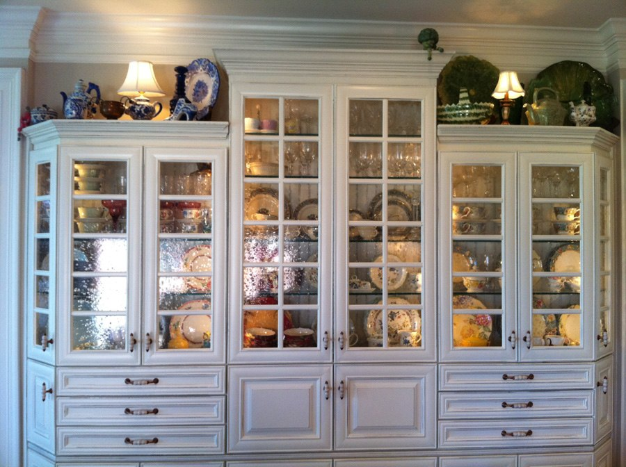

Ann Rast Designs

China Cabinet in my kitchen which houses “most” of my dishes.

Drawers hold silverware, napkins, salt & peppers; behind doors are everyday glasses, candlesticks, larger serving pieces, more sets of dishes, etc.
Lower doors below (just out of sight in this photo)
This cabinet is my custom design. The finish is a “distressed” look which exactly matches my table, chairs, and hutch. The guy who did the cabinets gave a “worn” look to the cabinets--thinking where would the “worn” places be in actual use. (I love my kitchen!)
I thought up what I think is a pretty clever way to display the dishes. I bought the clear plastic corner guards normally used for wallpaper to keep it from wearing on corners. I cut it to fit the shelves, then applied double-stick tape to one edge, and pressed into place on the shelves. This way I can stand the plates on edge without fear of them sliding forward and falling. Where you see one plate in the above photo, there are actually anywhere from 6 to 12 plates in that stack. This way you can see the different settings and they take up little space. There are 8 complete sets of dishes shown plus sets of crystal in the top. I have 3 more complete sets of dishes in the lower part of the cabinet. (I know, I have too many dishes. I wish I could have more as I love them so much!)